<!DOCTYPE html>
<html lang="zh-CN">
<head>
<meta charset="utf-8">
<meta name="viewport" content="width=device-width, initial-scale=1">
<title>用 LSM Tree 实现一个键值数据库 —— GopherConf 2017 演讲笔记 · 郑鹤</title>
<meta name="date" content="2020-02-26">
<meta name="category" content="思考">
<meta name="summary" content="Background 数据库中的各种奇技淫巧，实际上都来自于内存与磁盘的读写模式和性能区别。">
<meta name="mathjax" content="true">
<meta name="legacy" content="/blog/2020/02/26/Log-Structured-Merge-LSM-Tree-Usages-in-KV-Stores/">
<meta name="description" content="Background 数据库中的各种奇技淫巧，实际上都来自于内存与磁盘的读写模式和性能区别。">
<link rel="stylesheet" href="/assets/css/site.css">
<link rel="alternate" type="application/atom+xml" title="郑鹤 · ZhengHe" href="/feed.xml">
<link rel="icon" href="/assets/img/favicon.svg" type="image/svg+xml">
<script src="/assets/js/site.js"></script>
</head>
<body>
<site-nav active="writing"></site-nav>

<main class="container">
  <article class="post">
    <a class="back" href="/writing/">← 写作</a>
    <div class="meta-line">
      <a class="chip cat" href="/categories/%E6%80%9D%E8%80%83/">思考</a>
      <span class="when">2020-02-26</span>
    </div>
    <h1 class="title">用 LSM Tree 实现一个键值数据库 —— GopherConf 2017 演讲笔记</h1>
    <div class="prose">
<h2>Background</h2>
<p>数据库中的各种奇技淫巧，实际上都来自于内存与磁盘的读写模式和性能区别。</p>
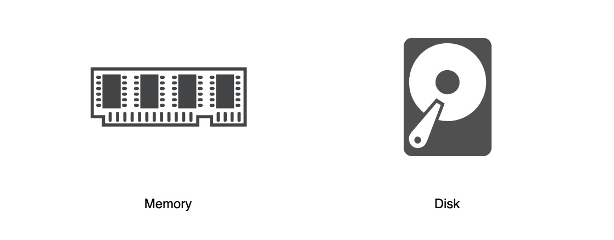
<p>总结如下表：</p>
<table>
<thead>
<tr>
<th>Memory</th>
<th>Disk</th>
</tr>
</thead>
<tbody>
<tr>
<td>byte-addressable</td>
<td>block-addressable</td>
</tr>
<tr>
<td>fast</td>
<td>slow</td>
</tr>
<tr>
<td>expensive</td>
<td>cheap</td>
</tr>
</tbody>
</table>
<p>当数据库中的数据无法一次性装入内存时，数据的读写就可能需要从内存穿透到磁盘。在 OLTP 场景下，每次事务写入和读取的数据数量都不大。但因为磁盘是块存储设备，无论是否需要，写入和读取都以块 (block) 为单位：</p>
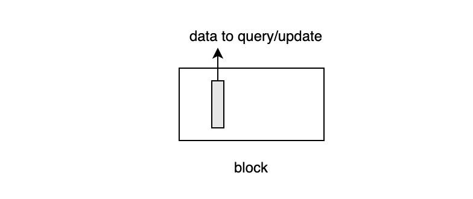
<p>这就导致许多不必要的数据传输。除此之外，在磁盘中连续读取或写入相邻的数据块比随机的数据块效率高。因此数据库在组织数据、索引时，为了减少不必要的 I/O，同时提高 I/O 的效率，就需要尽可能做到：</p>
<ul>
<li>让具有局部性的数据、索引在磁盘上相邻存储</li>
<li>让具有局部性的数据、索引批量写入到磁盘中</li>
</ul>
<p>从而达到两个目的：</p>
<ul>
<li>读出的数据都是需要的</li>
<li>写入的数据都是有用的</li>
</ul>
<h2>B+ Tree</h2>
<p>B+ tree 作为数据库索引，已经被许多成熟的关系型数据库所验证。如下图所示：</p>
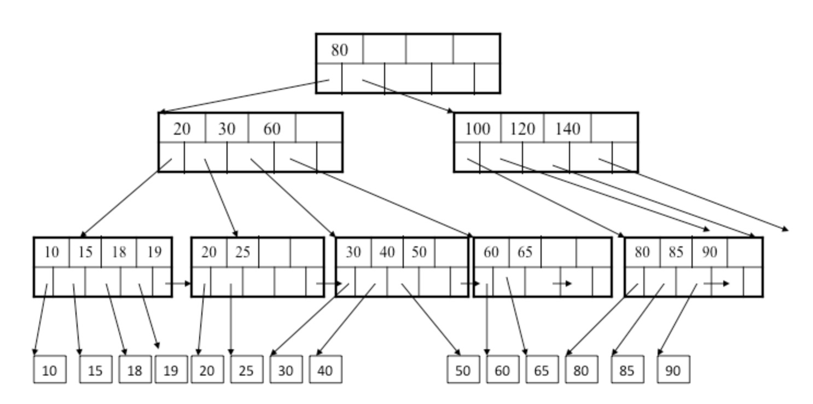
<blockquote>
<p>ref: <a href="https://janzhou.org/2015/bf-tree-approximate-tree-indexing.html">https://janzhou.org/2015/bf-tree-approximate-tree-indexing.html</a></p>
</blockquote>
<p>得益于其矮胖的平衡树形结构，且将所有数据置于叶子节点，B+ 树的读取性能好且稳定。但它的劣势在于，更新数据时成本较高，不仅要更新数据，还要更新索引。如果表中有多个索引，则都要更新，更新每个索引时还可能更新多个节点，因此写数据的性能在一些写要求苛刻的场景下并不能满足要求。</p>
<h2>LSM Tree</h2>
<p>在键值数据库场景下，相较于 B+ 树，LSM 树能够提供更高效的写性能。LSM 树的基本思路就是批量写数据，即先将需要写入的数据放在内存中，等到达一定容量时再写入磁盘。其基本结构如下图所示：</p>
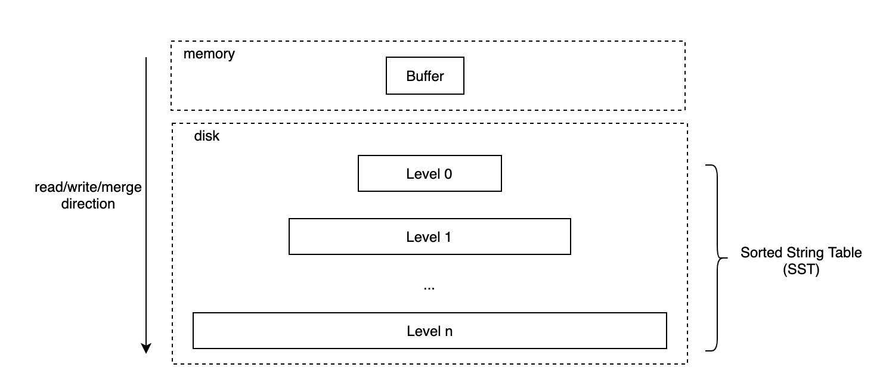
<h3>Buffer</h3>
<p>在 buffer 中存储着最新写入的键值对数据，这些数据通常按照键的顺序存储在相应的有序数据结构中，如跳表。同时 Buffer 也是数据查询的入口，存储着最新鲜的数据，或者数据的最新版本。</p>
<h3>Sorted String Table (SST)</h3>
<p>当 Buffer 中的数据容量到达一定阈值时，会被顺序地写入磁盘中。磁盘中的数据分为多个层次，每层的数据容量指数递增。每层数据又可以继续被划分为一个或多个 SST，每个 SST 中的数据按顺序排列。且同一层级中的多个 SST 之间的键数据通常不会有交集。每层数据量大小都有限制，当数据量达到阈值时，该层的某个 SST 需要与下一层的若干个 SST 合并 (merge)，流入下一层中。因此图中越上层的数据越新、越下层的数据量越大。</p>
<p>通常认为 SST 是不可变 (Immutable) 的数据结构，所有数据更新都通过写入新的 SST 实现，而所有合并操作也是通过生成新的 SST 实现。这种方式对实现数据库的多版本并发控制 (MVCC) 比较友好。</p>
<h3>Writes</h3>
<p>写入键值数据时，先将数据插入放到内存中的缓存 (buffer) 数据结构中，写入请求就可以返回响应。这个过程完全在内存中，因此效率很高。这里的写入操作包含插入、更新和删除，对于 LSM Tree 来说，更新和删除也是插入新的键值对，只不过删除存放的值是一个删除标记。</p>
<p>需要注意的是，大部分数据库为了保证 durability，都会将操作日志写入 WAL (write-ahead log) 中，因此这里实际上每次写数据，都有日志落盘。但因为日志是 append-only 的结构，因此这种写入的效率通常很高。</p>
<h3>Merge (Compaction)</h3>
<p>上文提到，disk 中每层数据都有容量限制，当 L 层数据超过阈值时，需要将 L 层的某个 SST 与 L+1 层中键的范围与该 SST 有重叠的多个 SST 合并，产生新的一组 SST 存放在 L+1 层中。如果此时 L+1 层中的数据容量也达到阈值，则会触发连续的合并。</p>
<p>在合并的过程中，相同键的值会被合并，只留下最新的值或者被删除，因此合并的过程也是压缩 (compaction) 的过程。</p>
<h3>Lookups</h3>
<p>由于上层的数据比下层的新，因此单条数据的查询首先从 buffer 开始，然后到 L0，L1，...，Ln，在每层数据查询时可以使用二分查找。范围查询也类似，可能需要查询多层数据。这种结构对于具有时间局部性的数据效率更高。</p>
<p>有许多优化手段可以避免每次查询都在每层的每个 SST 上执行二分查找。最常见的有两种，fence pointers 和 Bloom filters。</p>
<h4>fence pointers</h4>
<p>fence pointers 的思路就是记录每个 SST 中建的最大值和最小值，由于每层中的多个 SST 的键值范围互相不重叠，这样对于单个键的查询，就能将查找范围缩小到某一个 SST 中。</p>
<h4>Bloom filters</h4>
<p>bloom filter 则是在 fence pointers 之前的一层过滤器，通过其较低的 FP(false positive)，将大多数不必要的查询拒之门外。</p>
<p>整个数据查询的架构如下图所示：</p>
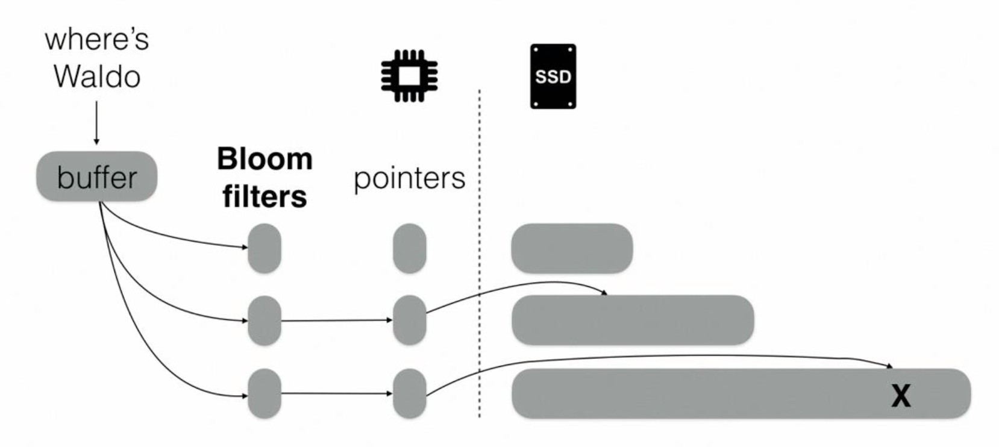
<h3>Tiering &amp; Leveling</h3>
<p>在 LSM 树的实现中，合并时间点的选择决定了该实现的读写性能取舍。通常合并地越频繁，读取数据所涉及的 SST 数量越少，读性能越好，与此同时写操作的放大效应越大，单条数据被合并的次数越多，写性能越差。</p>
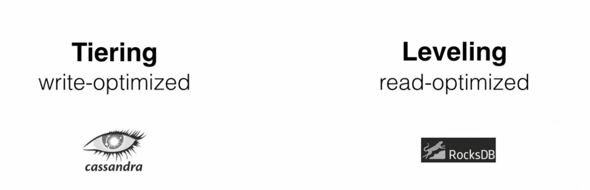
<p>在 Tiering 中，每一层数据有多个 SST；在 Leveling 中，每一层数据通常只有一个 SST：</p>
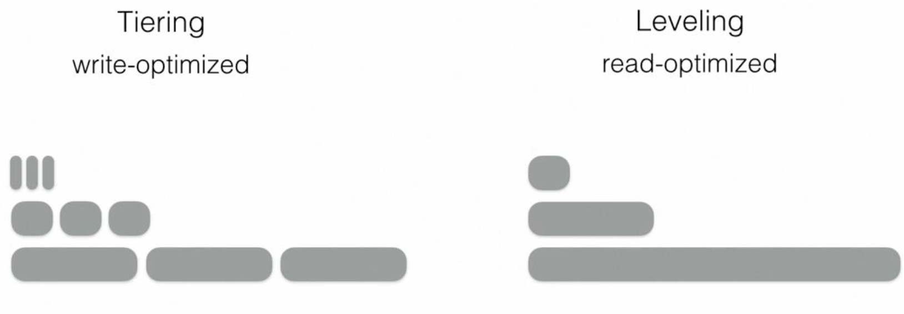
<p>其中两层之间的容量比例是很重要的参数，记为 R。R 越大，则层数越少；R 越小，则层数越多。数据的总层数为 $log_{R}N$ 。当 R 很小时，Tiering 与 Leveling 的效果趋于一致。通常 Tiering 中的 R 比较大，而 Leveling 的 R 比较小，如下图所示：</p>
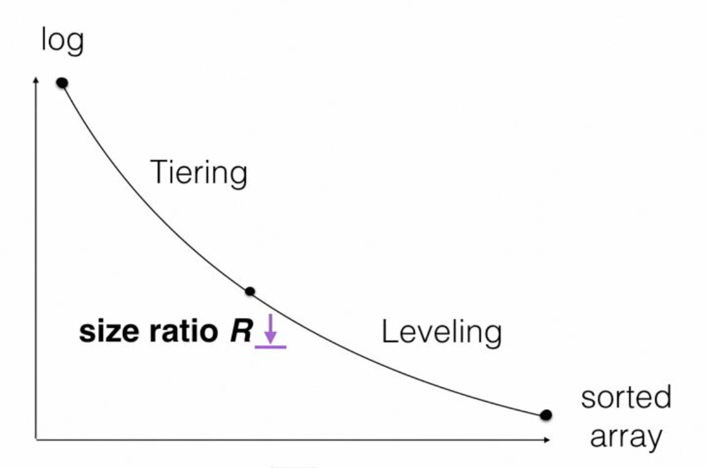
<p>考虑极端情况：当 R 很小时，相邻两层数据容量差别小，每层数据就是一个 sorted array，在每层中查找数据只需一次二分查找，这种情况下读性能好；当 R 很大时，每层数据约等于没有顺序，就像日志一样，这种情况下写性能好。</p>
<p>很自然的，不同业务场景对读写性能有不同的需求，因此在各个 R 上都有相应的键值数据库存在：</p>
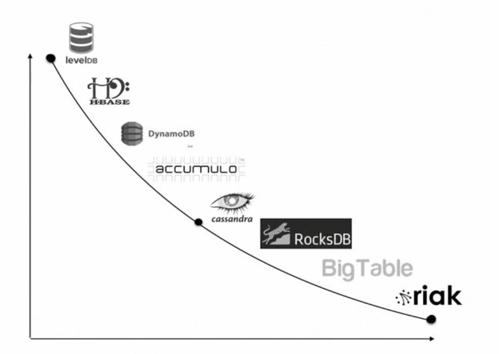
<h2>Case Study: couchbase/moss</h2>
<p>moss 是由 couchbase 的工程师开发的键值数据库，本节的 case study 来自于 Marty Schoch 在 GopherConf 2017 上的分享：<a href="https://www.youtube.com/watch?v=ttebJcN5bgQ">Building a High-Performance Key/Value Store in Go</a>。</p>
<h3>General Purpose Key-Value Stores</h3>
<p>站在 Go 语言工程师的角度上，通用键值数据库中的 key 和 value 就是 byte slice：</p>
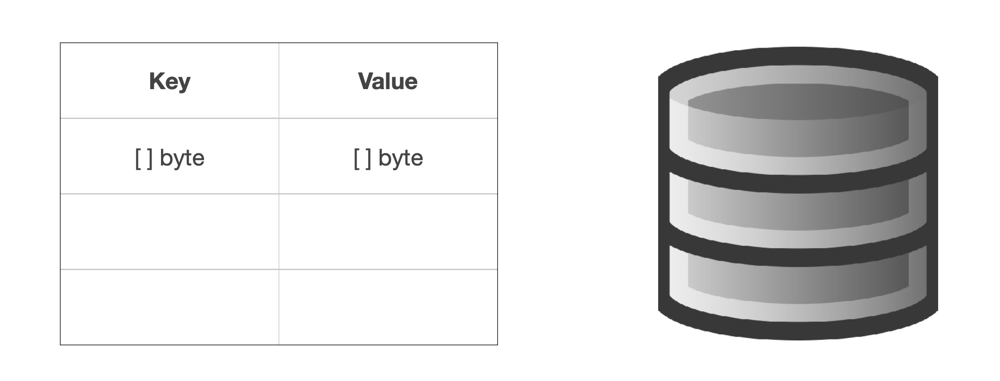
<p>通用键值数据库通常需要支持：</p>
<ol>
<li>Get/Set/Delete Values by Key</li>
<li>Iterate Ranges of Key-Value Pairs</li>
<li>Atomic Batch Updates</li>
<li>Isolated Read Snapshots</li>
<li>Persistence to Disk</li>
</ol>
<p>1， 2， 3， 5 项都容易理解，Isolated Read Snapshots 其实就是 MVCC，即当用户开始遍历键值数据时，之后的数据更新对当前的遍历不可见。</p>
<h3>Special Purpose Key-Value Store</h3>
<p>moss 团队需要的并非一个通用键值数据库，他们有特殊的性能关注点：</p>
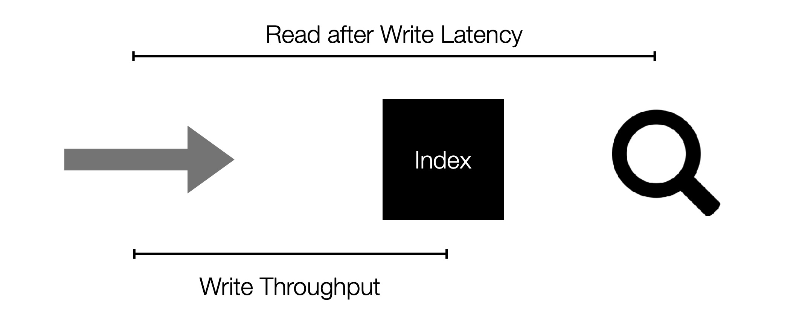
<ol>
<li>写吞吐</li>
<li>写入数据后到能查询之间的时延</li>
</ol>
<h3>Off-The-Shelf Solutions</h3>
<p>在决定开发自己的键值数据库之前，moss 工程师也调研了一些市面上开源的数据库，如 BoltDB, RocksDB, GoLevelDB 以及 Badger。</p>
<h4>BoltDB</h4>
<p>BoltDB 是 Go 语言编写的键值数据库。BoltDB 通过单线程解决并发控制解决方案，支持可序列化事务隔离，通过成熟的 B+ 树来解决内存、磁盘读写模式的不匹配问题，BoltDB 已经在许多商业系统中成功运用，其可靠性也得到了验证。它的优势在于极高的读效率，但由于它使用 B+ 树，天然地其写性能要弱于使用 LSM 树的键值数据库解决方案。</p>
<p>有关 BoltDB 的分析可参考本人的项目 <a href="https://github.com/ZhengHe-MD/learn-bolt">ZhengHe-MD/learn-bolt</a>。</p>
<h4>RocksDB</h4>
<p>RocksDB 是基于 google 的 LevelDB 二次开发的键值数据库，其内部采用了 LSM 树设计，在 Write-Amplification-Factor (WAF)、Read-Amplification-Factor (RAF) 和 Space-Amplification-Factor (SAF) 中取得更灵活的权衡，它支持多线程数据压缩，能够处理 TB 级别数据。相较于 BoltDB，RocksDB 有更好的读写性能平衡，但它使用 C++ 编写，使得 moss 工程师需要利用 cgo 来跨越 Go 和 C++ 的边界，且这一层边界开销也有一定的性能损耗，因此 moss 团队没有采用 RocksDB。</p>
<h4>GoLevelDB</h4>
<p>GoLevelDB 是 LevelDB 的 Go 语言原生实现，其同样采用 LSM 树设计，但经过反复调试，moss 团队发现它无法达到其读写性能的高要求，因此放弃。</p>
<h4>Badger</h4>
<p>在 moss 团队开始寻找键值数据库解决方案时，badger 项目还未开源，因此无法验证其是否满足需求。</p>
<h3>Design Philosophy</h3>
<p>Rob Pike 在 Notes on C Programming 说道：</p>
<blockquote>
<p>Rule3: Fancy algorithms are slow when n is small, and n is usually small. Fancy algorithms have big constants. Until you know that n is frequently going to be big, don't get fancy.</p>
<p>Rule4: Fancy algorithms are buggier than simple ones, and they're much harder to implement. Use simple algorithms as well as simple data structures.</p>
</blockquote>
<p>Dave Cheney 提到：</p>
<blockquote>
<p>Simplicity cannot be added later</p>
</blockquote>
<p>moss 团队的设计理念非常明确：能简则简。</p>
<h3>Interface Design</h3>
<h4>Collection</h4>
<p>在 moss 中，每个数据库就是一个 Collection，它只暴露两个接口：</p>
<pre><code class="language-go">type Collection interface {
    ExecuteBatch(b Batch) error
    Snapshot() (Snapshot, error)
}
</code></pre>
<p>它的设计十分精简：</p>
<ul>
<li>所有写数据操作都是一个 Batch</li>
<li>所有读数据操作都从一个 Snapshot 上发起</li>
</ul>
<h4>Batch</h4>
<pre><code class="language-go">type Batch interface {
    Set(key, value []byte) error
    Delete(key []byte) error
}
</code></pre>
<h4>Snapshot</h4>
<pre><code class="language-go">type Snapshot interface {
    Get(key []byte) ([]byte, error)
    Iterator(start, end []byte) (Iterator, error)
}
</code></pre>
<h3>Basic Idea</h3>
<p>moss 的解决方案很简单，用户写入一批键值数据 (这里忽略其值)，如下图所示：</p>
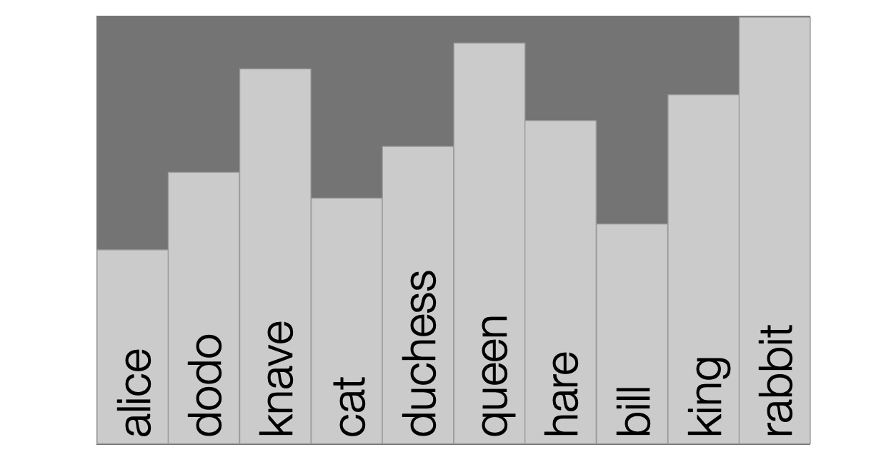
<p>如果可以将这批数据按 key 排序：</p>
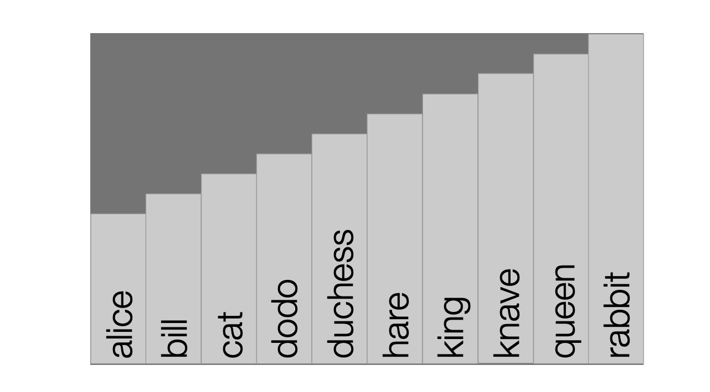
<p>就可以很方便地查询数据：</p>
<ul>
<li>查询单个键：二分查找</li>
<li>范围查询：二分查找 + 循环遍历</li>
</ul>
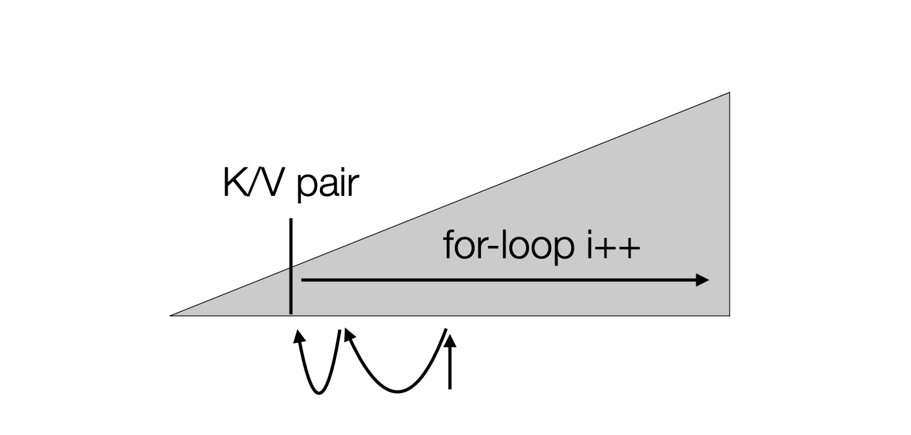
<h3>Data Layout</h3>
<p>将用户插入的一批数据成为 Batch，在数据库内部排序后称为 Segment：</p>
<pre><code class="language-go">type segment struct {
    data []byte
    meta []uint64
}
</code></pre>
<p>假设用户执行：</p>
<pre><code class="language-go">Set([]byte(&quot;name&quot;), []byte(&quot;marty&quot;))
</code></pre>
<p>接收该键值对的 segment 会将 &quot;name&quot; 和 &quot;marty&quot; 依次 append 到 data 之后，并在 meta 中增加 2 个 uint64 的元数据：</p>
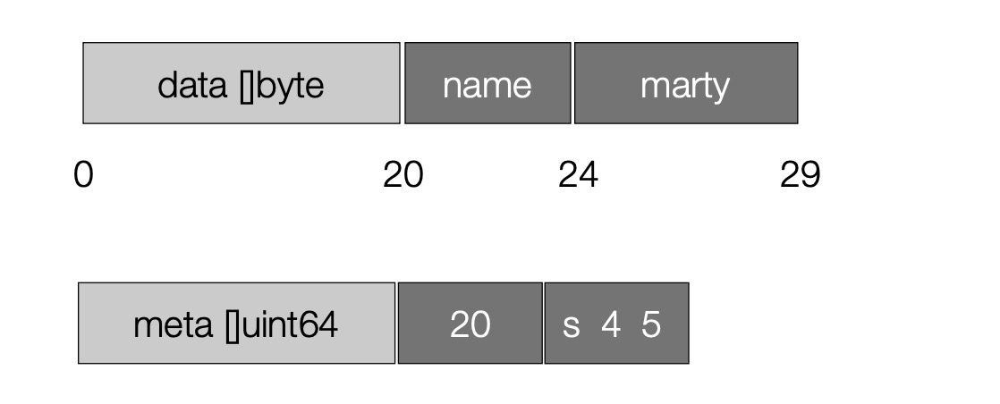
<ul>
<li>20 表示键值数据在 data 中的偏移量</li>
<li>s 表示操作名称 (set)</li>
<li>4、5 分别表示键和值的长度</li>
</ul>
<p>元数据中的两个 uint64 具体结构如下：</p>
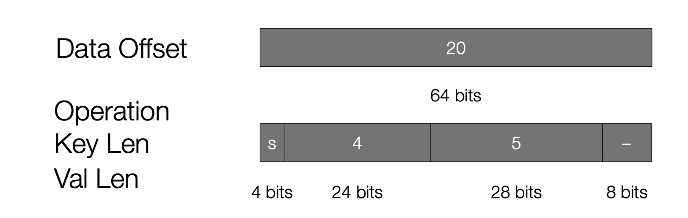
<p>这样存储的好处是，排序时只需要调整 meta，而无需修改 data。</p>
<p>显然用户会向数据库中插入许多 batch，每当插入新的 batch 时，moss 数据库就先将 batch 原地排序，然后插入到 segmentStack 中，并用锁来保护 segmentStack 的并发安全：</p>
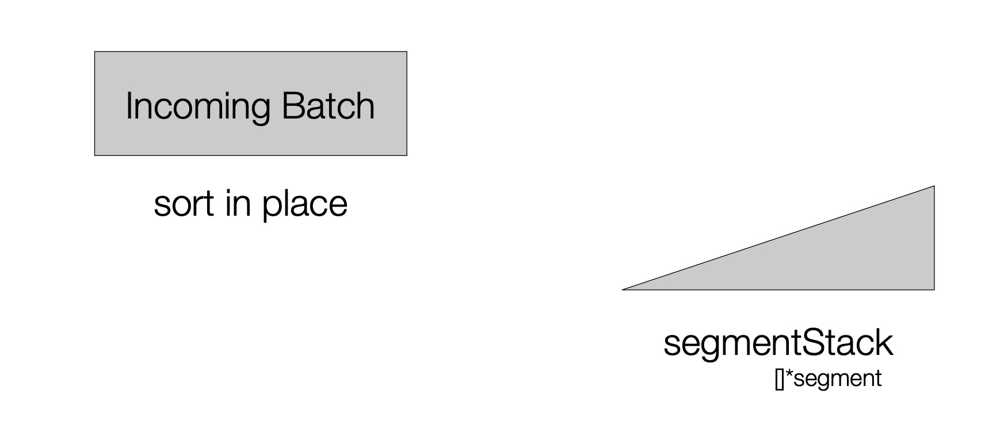
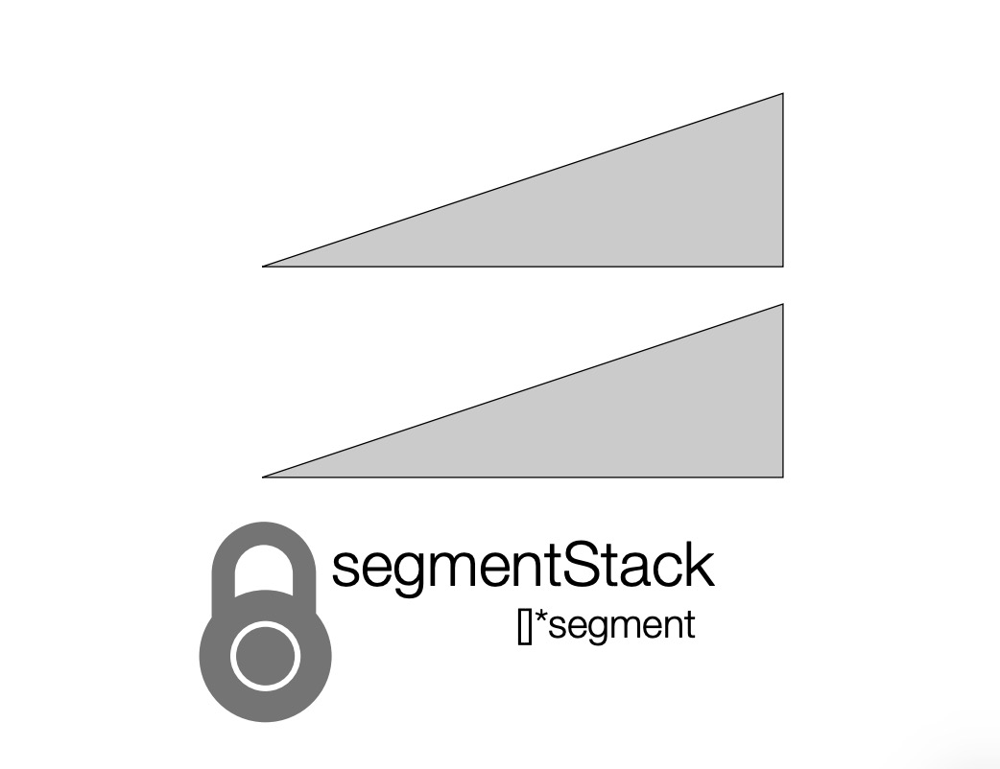
<p>在 segmentStack 中，新的 segment 在栈顶，老的 segment 在栈底。这种结构与 LSM 树如出一辙，新的数据在栈顶，老的数据在栈底。</p>
<h3>Operation</h3>
<h4>Get</h4>
<p>当用户要查询单个键时，就从栈顶的 segment 开始，依次对每个 segment 执行二分查找，直到找到键值数据或遍历完整个 segmentStack。</p>
<h4>Iteration</h4>
<p>利用小根堆，将每个 segment 中排序最小的元素开始放入小根堆中：</p>
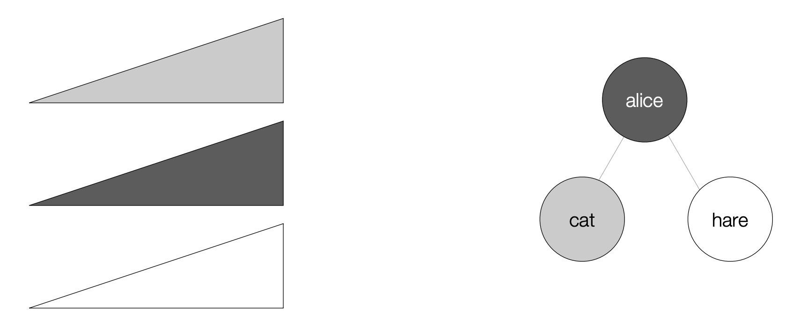
<p>读取堆顶元素，然后从相应的 segment 中补进新元素，直到遍历完成所有 segments，也就完成了 iteration 的操作。</p>
<h4>Atomic Batches</h4>
<p>利用锁来保护 segmentStack 的并发安全即可。</p>
<h4>Isolated Snapshots</h4>
<p>在 moss 眼中，所有 segments 都是 immutable 的数据，一旦 batch 变成 segment，该 segment 中的数据就不会再发生变化。这时候支持 Isolated Snapshots/MVCC 就很容易了，因为 segmentStack 保存的是对 segment 的指针，只要复制一份 segmentStack 即可满足要求。新到来的写入操作不会改变已存在的 segment。</p>
<h4>Background Merger</h4>
<p>当然，如果一直往 segmentStack 中压入 segment，前者会变得很长，数据读取的效率会下降，这时候就需要合并：</p>
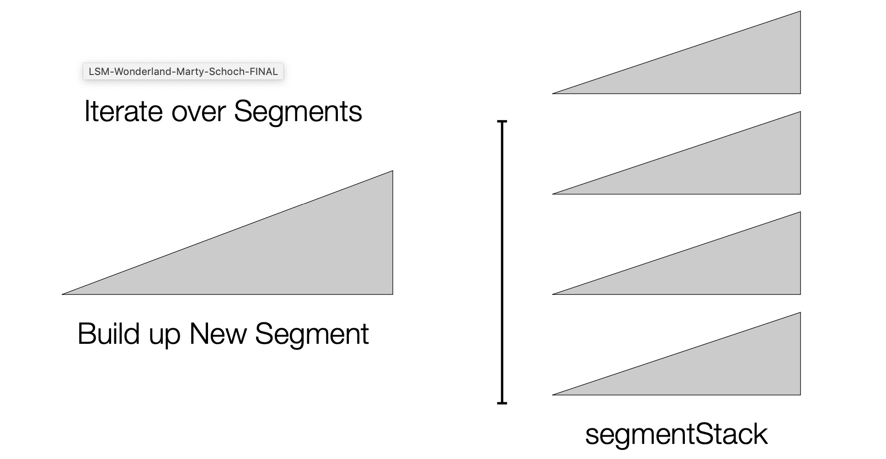
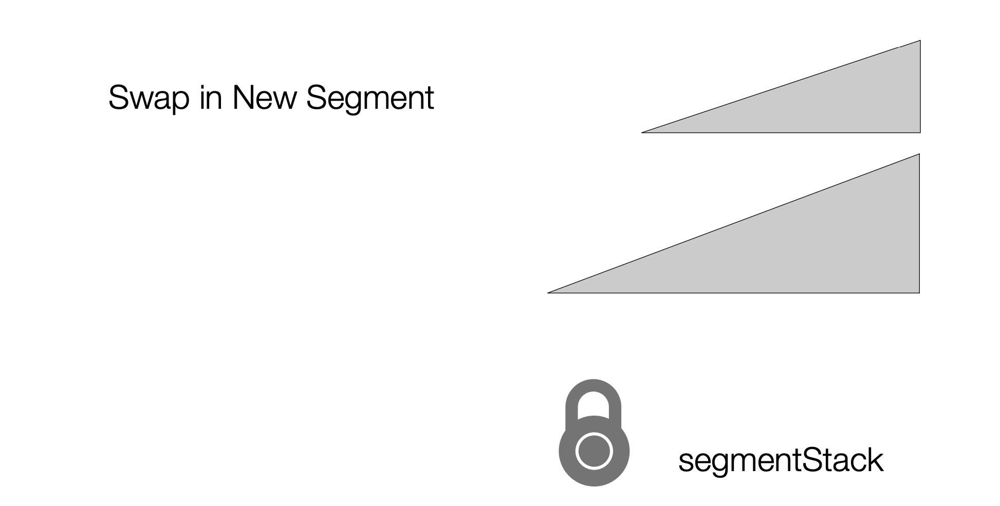
<h3>Database File</h3>
<p>moss 的数据库文件形式为 append-only，内部数据存储的内容如下所示：</p>
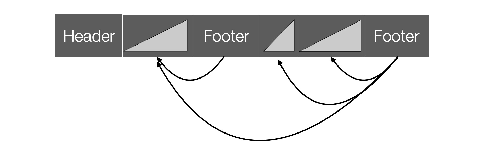
<p>其中 footer 中保存着指向 segments 偏移量的指针，且每个 footer 都保存对之前所有 segments 的指针。数据库启动时，会打开该文件，从后往前找到第一个合法的 Footer。如果最后一个 Footer 没有完整写入，数据库会找到更早的 Footer，当然这会丢失一些数据，但不影响数据库的正常运行。另外考虑到 WAL，数据的持久性依然可以得到保障。</p>
<p>从数据库读取文件后，moss 会将相应的 segments mmap 到内存中，让操作系统来处理内存管理逻辑：</p>
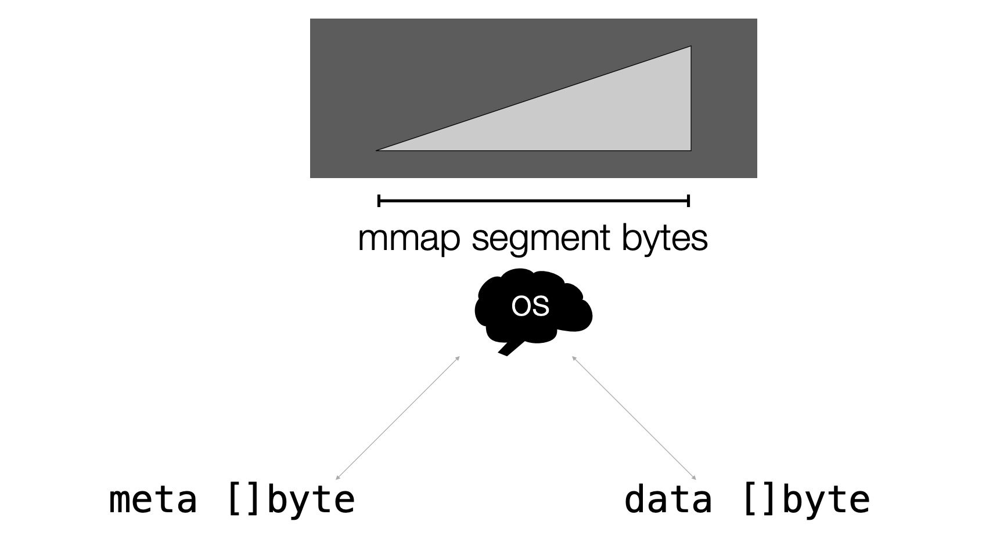
<p>此外，moss 还会利用 background merger 将文件中的 segments 合并。类似地，所有 segments 都是 immutable 的数据，每次合并都将生成新的数据文件：</p>
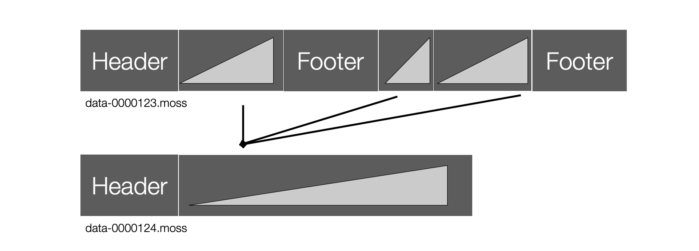
<p>从而保障 Isolated Read Snapshots 正常进行。</p>
<h2>References</h2>
<ul>
<li>Projects
<ul>
<li><a href="https://github.com/couchbase/moss">github: couchbase/moss</a></li>
<li><a href="https://github.com/google/leveldb">github: google/leveldb</a>
<ul>
<li><a href="https://github.com/google/leveldb/blob/master/doc/impl.md">doc/impl.md</a></li>
</ul>
</li>
<li><a href="https://github.com/facebook/rocksdb">github: facebook/rocksdb</a></li>
<li><a href="https://github.com/syndtr/goleveldb">github: syndtr/goleveldb</a></li>
</ul>
</li>
<li>Books
<ul>
<li><a href="https://www.amazon.com/Getting-Started-LevelDB-Andy-Dent/dp/1783281014">Getting Started with LevelDB</a></li>
</ul>
</li>
<li>Blogs
<ul>
<li><a href="https://www.igvita.com/2012/02/06/sstable-and-log-structured-storage-leveldb/">SSTable and Log Structured Storage: LevelDB</a></li>
</ul>
</li>
<li>Courses
<ul>
<li><a href="http://daslab.seas.harvard.edu/classes/cs265/project.html">CS265: Big Data Systems: An LSM-Tree Based Key-Value Store</a></li>
</ul>
</li>
<li>Videos
<ul>
<li><a href="https://www.youtube.com/watch?v=b6SI8VbcT4w">Youtube: Scaling Write-Intensive Key-Value Store by Microsoft Research</a></li>
<li><a href="https://www.youtube.com/watch?v=ttebJcN5bgQ">Youtube: Building a High-Performance Key-Value Store in Go by Marty Schoch</a> &amp; <a href="https://speakerdeck.com/mschoch/value-store-in-go?slide=3">slides</a></li>
</ul>
</li>
</ul>
    </div>
  </article>
  <div class="post-comments">
    <div class="label">COMMENTS · GISCUS</div>
    <div class="giscus-placeholder">giscus · GitHub Discussions</div>
  </div>
</main>

<site-footer></site-footer>
</body>
</html>
